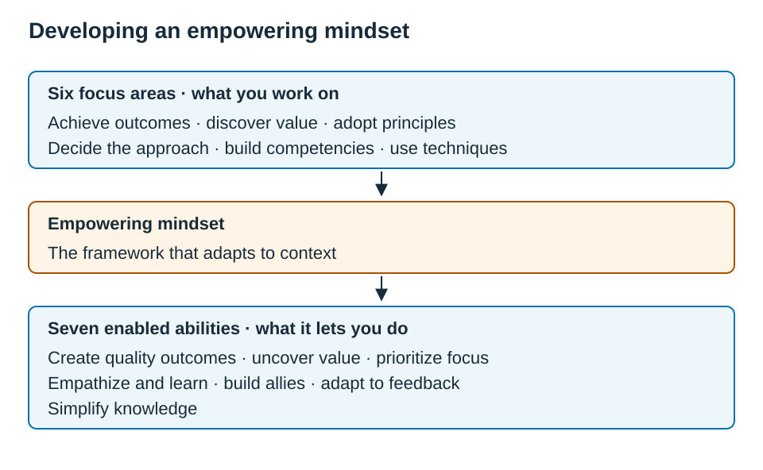

Chapter 2 — Mindset for Effective Business Analysis
2.0 — Domain Snapshot
| Item | Detail |
|---|---|
| Blueprint weight | 14% |
| Questions per ECBA exam | 7 out of 50 |
| Source | The Business Analysis Standard (2025), Ch. 3 — Mindset for Effective Business Analysis |
| Activity Statements | 2.1, 2.2, 2.3, 2.4 |
| A.S. | Full Activity Statement |
|---|---|
| 2.1 | Explain how mindset influences your effectiveness and identify ways to adopt an empowering mindset. |
| 2.2 | Recognize the shared values that drive work and explain how those values support the work to be done. |
| 2.3 | Identify core business analysis principles and apply them to guide your work and improve outcomes. |
| 2.4 | Recognize foundational competencies and assess when to apply them in your work. |
Domain 2 tests how you think and behave while you do business analysis, rather than testing definitions. You will be shown a business analysis professional doing something, and asked to judge whether the right mindset, shared value, principle, or competency is being applied. Decision authority depends on the role, context, and governance; do not take over decisions assigned to other stakeholders. Instead, the business analyst raises, supports, contributes, adapts, and helps the group move toward value.
💡 Exam Tips — Domain 2
- Practice applying the mindset as well as defining its terms. Ask “Which behavior demonstrates courage?” and explain the act that supports your choice.
- Learn the shared values, the principles, and the priority competencies as behaviors in scenarios, and not as lists to recite.
- To practice Domain 2, consider a business analyst’s actions in context. Your job is to judge whether the mindset, value, principle, or competency shown fits the situation, and to stay inside entry-level scope.
The four lenses of Domain 2. The hardest move in this domain is telling these four lenses apart, because a single scenario can touch all of them. The table below sets out a frame for keeping them separate.
| Lens | What it is | In a question it shows up as |
|---|---|---|
| Mindset (2.1) | The overall mental framework — plus the focus areas that build it and the abilities it enables. | A BA adapting (or failing to adapt) the approach to the situation. |
| Shared value (2.2) | A belief that drives behavior. | A behavior such as raising a hard truth (Courage) or weighing fairness (Ethics). |
| Principle (2.3) | A rule that guides decisions and trade-offs. | A choice such as removing non-value-adding work (Avoid waste). |
| Competency (2.4) | A skill the BA applies. | A skill in action, such as structuring a neutral workshop (Facilitation). |
The discriminator, in one line, is this: a value is a belief, a principle is a rule, a competency is a skill, and the mindset is the framework that adapts to context.
2.1 — A.S. 2.1: The Empowering Mindset
Activity Statement 2.1: “Explain how mindset influences your effectiveness and identify ways to adopt an empowering mindset.”
Reference Map: Standard ch.3
Glossary: Empowering mindset, Enabled abilities, Focus areas, Mindset.
Activity statement: IIBA ECBA Exam Blueprint V1.1; source mapping: ECBA Reference Map.
What this means. You should be able to say what mindset is in IIBA’s terms, explain why it changes how effective a business analyst is, and recognize an empowering mindset in action. An empowering mindset is flexible, context-aware, and deliberately learning. It does not force one familiar method onto every situation.
How it is tested. Expect application questions, which ask “Which behavior shows an empowering mindset?”, and classification questions, which ask whether something is a focus area, meaning how you build the mindset, or an enabled ability, meaning what the mindset lets you do. A near-miss to examine is a business analyst who reuses a previously successful approach without checking that it fits the new context.
In IIBA’s framework, mindset is the mental framework that guides decision-making, behavior, and team dynamics. It matters because it governs how the business analyst responds when the situation is uncertain, when stakeholder understanding is shifting, or when no single approach obviously fits. A strong answer shows flexibility, context awareness, and deliberate learning. A weak answer forces one familiar method onto every situation.
💡 Exam Tip — A.S. 2.1. If you catch yourself choosing an answer because it is what you would normally do at work, stop. Assess the present context before deciding whether an earlier approach fits. Prior success alone does not establish its suitability.
Six Focus Areas for Developing an Empowering Mindset
| Focus area | Behavioural description | Exam scenario example |
|---|---|---|
| Achieving organizational outcomes | Connect analysis work to the outcome the enterprise needs, not just to tasks completed. | The BA asks how the change supports the desired outcome before documenting details. |
| Discovering value for stakeholders | Look for what stakeholders consider useful, important, or worthwhile in context. | The BA compares stakeholder needs to expected value before helping prioritize. |
| Adopting appropriate principles | Use the business analysis principles (A.S. 2.3) to guide behavior and trade-offs. | The BA applies “See the whole” when a team fixates on one department’s issue. |
| Deciding how to approach the work | Choose and adapt the analysis approach based on the situation. | The BA adjusts the approach because stakeholder feedback is changing the team’s understanding. |
| Actively developing foundational competencies | Deliberately improve the competencies needed for effective analysis (A.S. 2.4). | The BA practices facilitation before a complex multi-stakeholder workshop. |
| Being able to use foundational techniques | Know when and how to apply the basic techniques that support the work. | The BA chooses interviews when one stakeholder needs private clarification first. |
Seven Abilities Enabled by an Empowering Mindset
| Enabled ability | What it means in exam language |
|---|---|
| Create high-quality outcomes | Help the team produce useful, fit-for-purpose outcomes. |
| Uncover value while navigating toward outcomes | Keep value visible while the team learns and adapts. |
| Prioritize focus | Help the team concentrate on what matters most. |
| Empathize with and learn from impacted stakeholders | Listen to those affected and update understanding from evidence. |
| Collaborate to build allies for change | Help stakeholders participate in and support the change. |
| Assess context and adapt to realities and feedback | Change approach when context, evidence, or feedback changes. |
| Simplify the building and sharing of knowledge | Help people understand and use information more easily. |
Distinguish these two lists. Focus areas are how you develop the mindset, while enabled abilities are what the mindset then lets you do. It helps to read them as cause and effect. The focus areas are the inputs you practice, and the enabled abilities are the outputs that the mindset produces. Figure 2.1 shows this relationship.
Figure 2.1 — Focus areas feed the mindset; the mindset produces the abilities

| Part | Items |
|---|---|
| Six focus areas (what you work on) | achieve outcomes · discover value · adopt principles · decide the approach · build competencies · use techniques |
| Empowering mindset | the framework that adapts to context |
| Seven enabled abilities (what it lets you do) | create quality outcomes · uncover value · prioritize focus · empathize and learn · build allies · adapt to feedback · simplify knowledge |
The single anchor that resolves this trap is this: you work on a focus area so that the mindset can produce an enabled ability. For example, you practice facilitation, which is the focus area of actively developing competencies, so that the mindset lets you collaborate to build allies, which is an enabled ability. If the item is something you deliberately do in order to get better, it is a focus area. If it is something the developed mindset now lets you achieve, it is an enabled ability.
⚠️ Exam Trap — focus area versus enabled ability. “Deciding how to approach the work” is a focus area, which is something you work on. “Collaborating to build allies for change” is an enabled ability, which is something the mindset produces. Questions describe one of them and ask which list it belongs to. A quick rule is that a focus area is what you work on, while an enabled ability is what the mindset lets you do.
In Practice — the plan that worked last time. A business analyst joins a new initiative fresh from a success where a detailed, fixed plan worked beautifully. Her instinct is to reuse it. However, here the problem is still emerging, and stakeholder feedback is reshaping the team’s understanding week to week. Instead of reaching for last time’s plan, she starts by reading this context, and then shapes a lighter approach that she can revise as the team learns. The empowering mindset is not the plan she used before. It is the deliberate choice to fit the approach to the situation in front of her.
Exam Focus — A.S. 2.1
Traps. Two traps recur here. The first is focus area versus enabled ability, which are two parallel lists that sound interchangeable, where only the “enabled” items belong to what the mindset produces. The second is reusing a past method without checking that it fits, which feels disciplined but ignores the context, and is the wrong mindset.
How questions are framed. Expect three shapes. The first asks “Which behavior shows an empowering mindset?”, where the keyed answer adapts to the context and the near-miss reuses a proven approach. The second asks “Is this a focus area or an enabled ability?” as a classification. The third is a scenario where uncertainty is rising, and the business analyst should adapt and keep learning, rather than freeze the planning or hand the decision to the sponsor.
Exam Lens C2-EL01
A.S.: 2.1
Stem. A BA previously used a detailed predictive (plan-driven, sequential) analysis plan on a successful initiative. On a new initiative, stakeholder needs are unclear and feedback is changing weekly. What should the BA do?
Options.
- A. Reuse the previous plan, because consistency reduces analysis risk.
- B. Avoid planning until all stakeholder needs are stable.
- C. Adapt the approach to the current context and update it as learning occurs.
- D. Ask the sponsor to select the analysis approach and document the decision.
C2-EL01 — Show answer and explanation
C2-EL01 — Answer: C
| ID | Answer | Domain | A.S. | Type | Difficulty | Source |
|---|---|---|---|---|---|---|
| C2-EL01 | C | 2 | 2.1 | situation | medium | Standard §3.1 |
A. Prior success does not establish that the same plan fits uncertain needs.
B. Uncertainty calls for appropriate planning and adaptation, rather than abandoning planning.
C. Adapting to evidence and context demonstrates an empowering mindset.
D. Recording a sponsor decision alone does not address how analysis should adapt.
Reasoning (two-step). In Step 1, option B is wrong because planning still matters under uncertainty, and option D is wrong because the business analyst contributes to the approach rather than merely recording the sponsor’s choice. In Step 2, you choose between A and C. An empowering mindset is flexible and context-aware, so the business analyst fits the approach to this situation and keeps adapting. Option C fits.
Source detail: Standard §3.1
Review: A.S. 2.1
2.2 — A.S. 2.2: Shared Values
Activity Statement 2.2: “Recognize the shared values that drive work and explain how those values support the work to be done.”
Reference Map: Standard ch.3
Glossary: Collaboration, Continuous learning, Courage, Curiosity, Customer focus, Ethics, Improvement, Inclusion, Respect, Shared values, Value maximization.
Activity statement: IIBA ECBA Exam Blueprint V1.1; source mapping: ECBA Reference Map.
What this means. The Standard presents business analysis as a human-centred, creative process. The shared values are the beliefs that keep that process useful, ethical, and value-focused. You should be able to recognize which value a behavior demonstrates, or which one is being violated.
How it is tested. To practice applying the values, consider a scenario that shows a behavior, such as a business analyst challenging a popular but unsupported solution, or including a stakeholder voice that was being ignored, and asks which value it reflects. Adjacent values, such as Collaboration and Courage, can both seem plausible, so pick the one that names the defining act.
| Shared value | Behavioural meaning | Exam trigger |
|---|---|---|
| Respect | Stakeholder input is heard and considered. | A BA dismisses or includes a stakeholder voice. |
| Courage | Difficult facts, assumptions, or risks are raised even when uncomfortable. | A BA challenges a popular solution the evidence does not support. |
| Collaboration | Stakeholders work together to improve understanding and outcomes. | The BA brings groups together rather than working alone. |
| Ethics | The BA considers whether the work is right and fair — not just legal or fast. | A profitable option may disadvantage a stakeholder group. |
| Curiosity | The BA asks questions and explores beyond the first answer. | A request is treated as a starting point, not the final need. |
| Continuous learning | The BA uses feedback and evidence to improve understanding. | The team updates assumptions after learning from users. |
| Improvement | The BA looks for better ways to work and better outcomes. | The BA suggests a simple change to remove a recurring problem. |
| Customer focus | The BA considers the real customer experience. | The BA checks how a process change affects customers. |
| Value maximization | The BA helps focus effort on the greatest value in context. | The BA supports prioritization by value, not preference alone. |
Ethics is broader than compliance. A solution can be legal, fast, and commercially attractive, and yet still raise ethical concerns. When “best” and “ethical” do not align, the analyst follows the agreed decision process instead of assuming authority to approve or stop the initiative. Instead, the business analyst raises the concern with the appropriate stakeholders, so that the decision weighs value against ethical expectations. Inclusion is a practical part of this. Actively seeking diverse stakeholder perspectives reduces blind spots and produces outcomes that work for the people affected. For example, the business analyst makes sure that the needs of users who rely on a screen reader are represented, and not only the needs of the typical user.
⚠️ Exam Trap — values as abstract definitions versus behaviors. Go beyond asking “What is the definition of Courage?” Consider a business analyst who pushes back on a sponsor’s preferred solution because the evidence does not support it, and then asks which value that behavior shows. Learn each value as a behavior pattern, and not as a dictionary entry.
Several values sit close enough to trip you up. When two of them feel possible, name the defining act.
| Easily confused | How to tell them apart |
|---|---|
| Courage vs. Continuous learning | Raising an uncomfortable, evidence-based concern = Courage; updating your own understanding from feedback = Continuous learning. |
| Curiosity vs. Continuous learning | Probing past the first request to find the real need = Curiosity; revising a belief once evidence arrives = Continuous learning. |
| Respect vs. Collaboration | Hearing and considering a stakeholder’s voice = Respect; getting stakeholders working together = Collaboration. |
| Customer focus vs. Value maximization | Centring the customer’s experience = Customer focus; steering effort to the highest-value work = Value maximization. |
| Improvement vs. Value maximization | Finding a better way to work or a better outcome = Improvement; prioritizing by greatest value = Value maximization. |
💡 Exam Tip — A.S. 2.2. If an option says “it is legal, so proceed,” be wary. Ethics here is not limited to legal compliance, because the business analyst helps stakeholders consider whether the work is also right and fair.
In Practice — saying the unwelcome thing. A product team is excited about a feature that everyone assumes customers want. Quiet in the analysis is an assumption that no one has tested, and the business analyst suspects it is shaky. Raising it now will not be popular, because the room has momentum. She brings the evidence to the appropriate stakeholders anyway, framed as a question worth answering before the team commits. She is not blocking the feature or deciding its fate. She is showing Courage, by surfacing an uncomfortable, evidence-based concern rather than letting enthusiasm carry an untested bet.
Exam Focus — A.S. 2.2
Traps. Check three distinctions here. The first is values as definitions rather than behaviors, because applying a value requires more than recalling its dictionary meaning. The second is treating ethics as legal compliance only, when ethics also asks whether the work is right and fair. The third is adjacent values, because Collaboration, Customer focus, and Continuous learning can all be relevant in the background, so you should name the defining act, such as raising a hard truth, which is Courage.
How questions are framed. Expect three shapes. The first asks “Which value does this behavior demonstrate?”, where two values are plausibly present and you choose the defining one. The second offers a legal-but-questionable option, where the keyed answer raises an ethical concern rather than proceeding. The third asks “Which value is missing or violated?”, when a stakeholder voice is excluded, or a request is accepted without exploring the real need.
Exam Lens C2-EL02
A.S.: 2.2
Stem. A sponsor prefers a solution that will meet the deadline, but early analysis shows it may systematically disadvantage a customer segment. The option appears legal. What should the BA do FIRST?
Options.
- A. Proceed, because the sponsor owns the decision and the option is legal.
- B. Raise the ethical concern with the appropriate stakeholders before proceeding.
- C. Reject the solution, because an ethical concern automatically makes it invalid.
- D. Wait until customers complain, so the team has stronger evidence.
C2-EL02 — Show answer and explanation
C2-EL02 — Answer: B
| ID | Answer | Domain | A.S. | Type | Difficulty | Source |
|---|---|---|---|---|---|---|
| C2-EL02 | B | 2 | 2.2 | situation | medium | Standard §3.2 |
A. Legality and sponsor preference do not settle the ethical concern.
B. Surfacing the concern enables an informed stakeholder decision.
C. An ethical concern calls for examination; it does not automatically invalidate the option.
D. Waiting for complaints withholds a known concern from the decision.
Reasoning (two-step). In Step 1, option C is wrong because the scenario gives the analyst no authority to reject the solution independently, and option D is wrong because waiting can let harm continue. In Step 2, you choose between A and B. Legality and sponsor authority do not erase the ethical issue, so the business analyst surfaces it for consideration. Option B fits, and it stays in scope, because the business analyst raises the concern rather than deciding.
Source detail: Standard §3.2
Review: A.S. 2.2
2.3 — A.S. 2.3: Business Analysis Principles
Activity Statement 2.3: “Identify core business analysis principles and apply them to guide your work and improve outcomes.”
Reference Map: Standard ch.3
Glossary: Acceptance criteria, Analyze to determine what is valuable, Avoid waste, Business analysis principles, Get real using examples, See the whole, Stimulate collaboration and continuous improvement, Think as a customer, Understand what is doable.
Activity statement: IIBA ECBA Exam Blueprint V1.1; source mapping: ECBA Reference Map.
What this means. The seven business analysis principles are rules that help the business analyst decide how to act when several reasonable choices exist. You should be able to match the principle to the behavior in a scenario, and tell apart principles that describe related but distinct ideas.
How it is tested. A scenario shows the business analyst doing something, such as removing a useless report, connecting a local fix to the bigger purpose, or scoping to constraints, and asks which principle it applies. The two classic confusions are Avoid waste versus Understand what is doable, and See the whole versus Stimulate collaboration.
| Principle | Meaning | Behavioural example |
|---|---|---|
| See the whole | Analyze needs in the big-picture context and understand why a change is necessary. | The BA connects a local process issue to enterprise outcomes and stakeholders. |
| Think as a customer | Understand the customer experience and break it into usable detail. | The BA studies how customers experience an alert, service, or process. |
| Analyze to determine what is valuable | Continuously assess and prioritize work to maximize value. | The BA compares options by expected value and stakeholder impact. |
| Get real using examples | Use concrete examples to build shared understanding and support acceptance criteria (the conditions a solution must meet), design, and testing. | The BA walks through sample customer situations to clarify an ambiguous need. |
| Understand what is doable | Consider constraints and the operating environment so the solution can deliver value. | The BA checks budget, policy, staffing, and system limits before shaping options. |
| Stimulate collaboration and continuous improvement | Create conditions where stakeholders contribute and feedback improves the work. | The BA helps stakeholders review feedback and adapt the solution process. |
| Avoid waste | Identify value-adding and non-value-adding activities, then remove what does not help satisfy the need. | The BA removes unused reports or repeated approvals that add no value. |
⚠️ Exam Trap — Avoid waste versus Understand what is doable. Avoid waste means removing work that does not add value, such as dropping an unnecessary sign-off step. Understand what is doable means knowing the constraints and what can realistically be achieved, such as scoping to a budget. Removing useless work tests the first principle, while scoping to limits tests the second.
⚠️ Exam Trap — See the whole versus Stimulate collaboration. See the whole means connecting the work to the context, the reason for the change, the stakeholders, and the desired outcomes. Stimulate collaboration means creating the conditions for stakeholders to contribute and improve through feedback. A meeting full of stakeholders is not automatically “See the whole,” unless the big picture is actually being analyzed.
💡 Exam Tip — A.S. 2.3. “Avoid waste” is stronger than “reduce effort.” The exam-relevant idea is removing activities that do not contribute to satisfying the need, rather than simply doing less.
In Practice — turning “useful alerts” into something testable. A product team agrees that customers “should receive useful alerts,” but everyone pictures something different, and the requirement is too vague to build or test. Rather than debate definitions, the business analyst pulls up several real customer situations, such as a missed payment, a shipment delay, and a password reset, and walks the group through what a useful alert would do in each one. Those concrete cases become the acceptance criteria and the test ideas. This is Get real using examples, because the ambiguity dissolves not through argument but through concrete, shared situations.
Exam Focus — A.S. 2.3
Traps. Two traps recur here. The first is Avoid waste versus Understand what is doable, which is removing non-value work as against scoping to constraints. The second is See the whole versus Stimulate collaboration, which is analyzing the big picture as against getting stakeholders to contribute.
How questions are framed. Expect three shapes. The first asks “Which principle is being applied?”, where one principle clearly matches the action and a neighboring principle is the near-miss. The second asks “Which principle is most at risk?”, when the business analyst is busy collaborating but has not connected the work to its purpose, which is See the whole. The third is an action such as deleting a report that no one uses, keyed to Avoid waste rather than to the broader “prioritize” or “improve” principles.
Exam Lens C2-EL03
A.S.: 2.3
Stem. A team spends two hours every week producing a detailed analysis status report. No stakeholder reads it, it supports no decision, and it does not help satisfy the need. Which principle is BEST applied by removing the report?
Options.
- A. Understand what is doable, because the team has limited time.
- B. Avoid waste, because the activity does not add value or help satisfy the need.
- C. See the whole, because reporting connects the team to the wider enterprise.
- D. Analyze to determine what is valuable, because every activity should be prioritized.
C2-EL03 — Show answer and explanation
C2-EL03 — Answer: B
| ID | Answer | Domain | A.S. | Type | Difficulty | Source |
|---|---|---|---|---|---|---|
| C2-EL03 | B | 2 | 2.3 | situation | medium | Standard §3.3 |
A. The issue is an activity that adds no value, rather than feasibility within constraints.
B. Removing work that does not help satisfy the need applies Avoid waste.
C. The report is not helping establish the wider context.
D. The action removes noncontributing work rather than ranking competing options.
Reasoning (two-step). In Step 1, option C is wrong because the report is not helping anyone understand the bigger picture, and option D is too broad, because the action is not ranking competing work but eliminating useless work. In Step 2, you choose between A and B. Time limits are real, but the tested behavior is removing an activity that does not contribute to the need. That is Avoid waste, so option B fits.
Source detail: Standard §3.3
Review: A.S. 2.3
2.4 — A.S. 2.4: Foundational Competencies
Activity Statement 2.4: “Recognize foundational competencies and assess when to apply them in your work.”
Reference Map: Standard ch.3
Glossary: Adaptability, BABOK (Business Analysis Body of Knowledge), Business Acumen, Business Analysis Tools and Technology, Creative Thinking, Conceptual Thinking, Communication Tools and Technology, Decision Making, Facilitation, Foundational competencies, Industry Knowledge, Leadership and Influencing, Learning, Listening, Negotiation and Conflict Resolution, Non-Verbal Communication, Organization and Time Management, Organization Knowledge, Office Productivity Tools and Technology, Priority five competencies, Problem Solving, Personal Accountability, Systems Thinking, Solution Knowledge, Trustworthiness, Teaching, Visual Thinking, Verbal Communication, Written Communication.
Activity statement: IIBA ECBA Exam Blueprint V1.1; source mapping: ECBA Reference Map.
What this means. Foundational competencies are the basic skills, abilities, and characteristics used in effective business analysis. Standard §3.4 highlights five that matter across initiatives: Adaptability, Facilitation, Leadership and Influencing, Problem Solving, and Systems Thinking. The Blueprint also includes all 29 BABOK underlying competencies: study their purpose, meaning, and signs of effective use together. Appendix B provides a concise guide to those three dimensions, with BABOK Chapter 9 references. The sources do not assign a separate examination depth to the five and the remaining 24.
How it is tested. A scenario shows a skill in action, such as structuring a neutral session, reconciling competing interests, or finding a root cause, and asks which competency it is. Compare Facilitation with Negotiation and Conflict Resolution. One source point matters a great deal: Decision Making is testable, but it is not one of the five priority competencies.
The five priority competencies are Adaptability, Facilitation, Leadership and Influencing, Problem Solving, and Systems Thinking.
| Priority competency | In exam language | What it looks like | Exam trigger |
|---|---|---|---|
| Adaptability | Adjusting your behavioral style to be more effective. | Executive summaries for leaders; concrete workflow examples for operations staff. | Different stakeholders need different styles. |
| Facilitation | Structuring discussions and group interaction toward productive outcomes. | A neutral agenda, clarifying questions, helping a group work through options. | Neutral structure, productive group work. |
| Leadership and Influencing | Building consensus and guiding stakeholders toward value without formal authority. | The BA helps stakeholders align around value and trade-offs. | Guiding, influencing, building support. |
| Problem Solving | Ensuring the value created addresses the root cause of a problem. | Investigating why follow-ups are missed instead of just documenting a dashboard request. | Root cause, not symptom. |
| Systems Thinking | Understanding the enterprise and context holistically to maximize value. | Considering process, policy, technology, stakeholders, and impacts together. | Interconnections, whole enterprise. |
There are two cross-overs to watch. First, do not confuse the competency Systems Thinking with the principle See the whole from section 2.3. See the whole asks why the change matters and whom it serves, while Systems Thinking traces how the parts, which are process, policy, technology, and people, affect one another. Second, the value Curiosity, which is probing past the first request, is not the competency Problem Solving, which is finding the root cause.
⚠️ Exam Trap — telling the people-skills apart. Three competencies all involve working with a group. Facilitation means structuring a discussion neutrally, without taking a position. Negotiation and Conflict Resolution means helping parties with competing interests find common ground. Leadership and Influencing means aligning people toward shared value without formal authority. So, neutral structuring points to Facilitation, competing interests being reconciled points to Negotiation, and building support toward a direction points to Leadership and Influencing.
The five highlighted competencies are a cross-initiative foundation, rather than a separate examination tier. Decision Making also supports business analysis: it helps people compare alternatives using relevant criteria, understand trade-offs, and reach a decision (BABOK §9.1.2). It is included in the 29 but is not one of the five highlighted in Standard §3.4.
| Competency | Testable on the ECBA? | One of the priority five? |
|---|---|---|
| Adaptability | Yes | Yes |
| Facilitation | Yes | Yes |
| Leadership and Influencing | Yes | Yes |
| Problem Solving | Yes | Yes |
| Systems Thinking | Yes | Yes |
| Decision Making | Yes | No |
When a question asks for one of the five, do not pick Decision Making. When a question simply asks which competency is in play, do recognize the behavior of Decision Making.
Where stakeholders own a decision, the business analyst helps them decide without taking over their authority. The business analyst can structure the discussion, ask questions, show trade-offs, recommend under guidance, and help stakeholders see what supports value.
In Practice — two audiences, one analyst. A business analyst has to take the same set of findings to two very different rooms. With the executive sponsors, she leads with a one-page summary: the outcome at stake, the options, and the trade-offs. With the operations team an hour later, she drops the summary and instead walks step by step through how the change lands in their daily workflow, using their own screens and examples. The content is the same, but the delivery is deliberately different. That is Adaptability, which means adjusting your style to be effective with each audience, rather than changing the message.
Exam Focus — A.S. 2.4
Traps. Check three distinctions here. The first is Facilitation versus Negotiation, which is neutral structuring as against reconciling competing interests. The second is that Decision Making is testable but not one of the five priority competencies. The third is Problem Solving as against simply proposing a solution, because Problem Solving targets the root cause.
How questions are framed. Expect three shapes. The first asks “Which competency is being applied?”, where a structured session tempts you toward Facilitation, but competing interests make it Negotiation. The second is a study-guide-style claim that mislabels Decision Making as a priority competency, and you must spot why it is wrong. The third is a scenario that moves from the requested artifact to the underlying cause, which is keyed to Problem Solving.
Exam Lens C2-EL04
A.S.: 2.4
Stem. A BA runs a workshop to gather improvement ideas for an onboarding process. She sets a neutral agenda, keeps every group’s ideas visible, asks clarifying questions, and helps the group organize the options — without favoring any idea or deciding which to keep. Which competency is MOST directly being applied?
Options.
- A. Facilitation
- B. Decision Making
- C. Systems Thinking
- D. Leadership and Influencing
C2-EL04 — Show answer and explanation
C2-EL04 — Answer: A
| ID | Answer | Domain | A.S. | Type | Difficulty | Source |
|---|---|---|---|---|---|---|
| C2-EL04 | A | 2 | 2.4 | situation | medium | Standard §3.4; BABOK §9.5.1; BABOK §9.5.2 |
A. Structuring a neutral session and enabling participation demonstrate Facilitation.
B. The BA is not choosing an option against decision criteria.
C. The scenario does not analyze enterprise interconnections.
D. Leadership can also guide groups, but the specific work is structuring a neutral discussion.
Reasoning (two-step). In Step 1, option B is wrong because no option is being chosen, and option C is wrong because the scenario is not about enterprise interconnections. In Step 2, you choose between A and D. The business analyst is structuring a neutral session, rather than building support for a particular direction. That is Facilitation. There is also no conflict of interests here, so it is not Negotiation either.
Source detail: Standard §3.4; BABOK §9.5.1; BABOK §9.5.2
Review: A.S. 2.4
Exam Lens C2-EL05
A.S.: 2.4
Stem. A stakeholder asks for a new report because customer complaints are rising. Before documenting the report, the BA investigates the complaints and finds that customers receive inconsistent instructions from two teams. Which competency is the BA applying?
Options.
- A. Creative Thinking, because the BA may suggest a different solution.
- B. Problem Solving, because the BA is finding the root cause behind the request.
- C. Adaptability, because the BA is changing the stakeholder’s preferred approach.
- D. Leadership and Influencing, because the BA is guiding stakeholders toward a decision.
C2-EL05 — Show answer and explanation
C2-EL05 — Answer: B
| ID | Answer | Domain | A.S. | Type | Difficulty | Source |
|---|---|---|---|---|---|---|
| C2-EL05 | B | 2 | 2.4 | situation | medium | Standard §3.4; BABOK §9.1.4 |
A. The analyst is investigating a cause rather than generating alternative ideas.
B. Finding the underlying cause before choosing a response demonstrates Problem Solving.
C. No adjustment of the analyst’s behavioral style is described.
D. No attempt to build support for a selected direction is described.
Reasoning (two-step). In Step 1, option C is wrong because the business analyst is not adjusting her behavioral style, and option D is wrong because the scenario is not about consensus or influence. In Step 2, you choose between A and B. A new solution might emerge later, but the behavior shown is digging past the requested artifact to the underlying cause. That is Problem Solving, so option B fits.
Source detail: Standard §3.4; BABOK §9.1.4
Review: A.S. 2.4
Chapter 2 — Summary
- Domain 2 is worth 14% of the exam — about 7 questions — and it tests behavior and judgment, not definitions: a scenario shows a BA acting, and you name the mindset, value, principle, or competency it reflects.
- The discriminator that unlocks the whole domain: value = a belief · principle = a rule · competency = a skill · mindset = the framework that adapts to context.
- The empowering mindset’s core stance is to read the situation and adapt, rather than reuse what worked last time. (Focus areas build that mindset; enabled abilities are what it then lets you do.)
- Shared values are recognized as behaviors, and Ethics reaches beyond legality to what is right and fair.
- Principles are rules for choosing how to act; competencies are the skills you apply — and the three people-skills (Facilitation, Negotiation, Leadership and Influencing) are distinct.
- Scope, throughout: the ECBA-level BA raises, supports, adapts, and recommends — it exercises decision or approval authority only as assigned by the role and governance.
Chapter 2 — Exam Essentials
Use this as your prioritized revision list — what to memorize, what to recognize, and what to watch.
Memorize exactly.
- The definition of mindset: the mental framework that guides decision-making, behavior, and team dynamics.
- The five priority foundational competencies: Adaptability, Facilitation, Leadership and Influencing, Problem Solving, and Systems Thinking.
Recognize by clues.
- An empowering mindset adapts the approach and keeps learning. The wrong-mindset near-miss reuses a past method without checking that it fits.
- A focus area is what you work on, while an enabled ability is what the mindset lets you do.
- Shared values as behaviors: raising a hard truth is Courage; weighing fairness beyond legality is Ethics; including a dismissed voice is Respect; and probing past the first request is Curiosity.
- Principles as actions: removing non-value work is Avoid waste; connecting to the bigger reason is See the whole; scoping to constraints is Understand what is doable; and using concrete cases to fix ambiguity is Get real using examples.
- Competencies as skills: neutral group structuring is Facilitation; reconciling competing interests is Negotiation; finding the root cause is Problem Solving; tracing interconnections is Systems Thinking; tailoring your style is Adaptability; and using criteria and trade-offs to choose is Decision Making.
Watch (traps).
- A focus area is not an enabled ability.
- Avoid waste is not Understand what is doable.
- See the whole is not Stimulate collaboration. A crowded meeting is not, by itself, “See the whole.”
- Facilitation is not Negotiation and Conflict Resolution.
- Close values, such as Courage and Continuous learning, or Customer focus and Value maximization, and cross-category look-alikes, such as See the whole, which is a principle, against Systems Thinking, which is a competency, or Curiosity, which is a value, against Problem Solving, which is a competency. Match the defining act, and not the surface resemblance.
- Ethics is not legal compliance only.
- Decision Making is a BABOK competency, but it is not one of the five priority competencies in section 3.4.
- “Reuse what worked before” needs a context check: explain why the earlier practice fits the present need.
- The business analyst raises, supports, adapts, and recommends. Decision and approval authority follow the role and governance stated in the scenario.
🚀 Fast Track — Domain 2 (last-minute). Hold the four-way split in mind: a value is a belief, a principle is a rule, a competency is a skill, and the mindset is the framework. Master the five priority competencies, which are Adaptability, Facilitation, Leadership and Influencing, Problem Solving, and Systems Thinking, and remember that Decision Making is testable but not one of the five. The sharpest trap is telling apart Facilitation, which is neutral structuring, Negotiation, which is about competing interests, and Leadership and Influencing, which is aligning people toward value.
Chapter 2 — Practice Questions
Attempt all eight under exam discipline before you check your answers, and aim for about 90 seconds per question. Full answers and rationale are in Practice Answers & Rationale at the back of the book.
C2-Q01
A.S.: 2.1
An empowering mindset is developed through certain focus areas and, once developed, enables certain abilities. Which of the following is an enabled ability rather than a focus area?
- A. Deciding how to approach the work on each initiative.
- B. Actively developing the foundational competencies needed for analysis.
- C. Collaborating to build allies who support the change.
- D. Adopting appropriate business analysis principles to guide behavior.
C2-Q02
A.S.: 2.1
A credit union is moving loan applications online. The business analyst built the initial analysis around branch-staff input, but early usage data shows that members abandon the online form at the identity-verification step. Some team members argue the plan was agreed and should not change now. Which response BEST reflects an empowering mindset?
- A. Learn from the new member evidence and adapt the approach accordingly.
- B. Keep the agreed plan, since changing it after sign-off would undermine the team’s discipline.
- C. Ask the sponsor to choose whether the plan should change, and record the decision.
- D. Escalate the abandonment data to the delivery team and let them adjust the form.
C2-Q03
A.S.: 2.2
Analysis shows that a popular proposed feature rests on an assumption no one has tested. The business analyst expects that raising this will be unwelcome because leadership is enthusiastic, but presents the evidence to the appropriate stakeholders anyway. Which shared value is the analyst MOST directly demonstrating?
- A. Collaboration, because the analyst is involving stakeholders in the discussion.
- B. Customer focus, because untested assumptions usually affect customers.
- C. Continuous learning, because the analyst is encouraging the team to learn whether the assumption is valid before committing to the feature.
- D. Courage, because the analyst surfaces an uncomfortable, evidence-based concern despite resistance.
C2-Q04
A.S.: 2.2
In the Standard’s shared values, which behavior BEST reflects Curiosity?
- A. Exploring beyond the first answer by asking what the stakeholder is really trying to accomplish.
- B. Treating a stakeholder’s initial request as the final statement of the need so work can begin.
- C. Removing analysis activities that do not help satisfy the need.
- D. Accepting technical feasibility as sufficient reason to recommend the first proposed solution.
C2-Q05
A.S.: 2.3
Before a team finalizes options for a new returns process, the business analyst reviews a manual approval step that was added years ago to handle a rare exception. Current data shows the step no longer affects return accuracy or risk, and no decision depends on it. The analyst recommends removing it. Which principle is the analyst MOST directly applying?
- A. Understand what is doable, because the analyst is judging whether the step is feasible to keep within current constraints.
- B. Analyze to determine what is valuable, because the analyst is ranking which steps matter most to the process.
- C. Avoid waste, because the step adds effort without contributing to the result.
- D. Stimulate collaboration and continuous improvement, because trimming the step makes the process better over time.
C2-Q06
A.S.: 2.3
To improve a software company’s customer-support escalation process, a business analyst convenes Tier-1 agents, Tier-2 engineers, and the QA team in collaborative workshops where each group suggests improvements. The analyst has not clarified why escalation is being changed, what outcome the company needs, or how slow escalations affect customers downstream. Which principle is MOST clearly at risk?
- A. Stimulate collaboration and continuous improvement, because the busy workshops may still lack proper follow-up afterward.
- B. See the whole, because the analyst jumped to gathering fixes before establishing the bigger picture.
- C. Get real using examples, because the analyst gathered suggestions instead of concrete customer cases.
- D. Avoid waste, because convening three separate groups in parallel risks duplicating effort.
C2-Q07
A.S.: 2.4
Two clinics that are merging disagree on appointment-slot length: one insists on 15-minute slots for throughput, the other on 30-minute slots for complex cases. The business analyst brings both sides together, helps each surface its underlying interests, and guides them toward a blended scheduling rule that both can accept for review. Among the five priority foundational competencies in Standard §3.4, which is the analyst MOST directly applying?
- A. Leadership and Influencing, because the analyst is guiding the two groups toward an agreed direction.
- B. Systems Thinking, because the analyst weighs throughput against the impact on complex cases.
- C. Adaptability, because the analyst adjusts the proposed rule to fit two different positions.
- D. Facilitation, which §3.4 defines to cover running sessions, negotiating, and resolving conflicts.
C2-Q08
A.S.: 2.4
A business analyst uses agreed criteria — value, risk, and effort — to compare three feasible options and recommend one for stakeholder review. A study guide lists this behavior among the “five priority foundational competencies” from Standard §3.4. Why is that classification inaccurate?
- A. The behavior describes Problem Solving, which is one of the five priority competencies, so the study guide’s classification is correct after all.
- B. The behavior describes Decision Making, which is a BABOK underlying competency but not one of the five priority competencies in §3.4.
- C. The behavior describes Systems Thinking, a priority competency, so the guide named the wrong competency but was right to list it among the five.
- D. The behavior is not a competency but a business analysis principle, so it does not belong on the competency list at all.